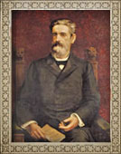

Quem foi Américo Brasilense Almeida Melo? eternizado no nome da nossa cidade!
Nascido em Sorocaba, São Paulo, em 08 de agosto de 1833 e faleceu no Rio de Janeiro, no antigo Estado da Guanabara, em 25 de março de 1896. Após formar-se em Direito pela Faculdade de Direito de São Paulo, em 1855, defendeu tese em doutorado em 1860. Seguiu para Sorocaba, onde exerceu advocacia e iniciou sua carreira política. Foi vereador em São Paulo, deputado provincial e geral, presidente da Paraíba (1866), do Rio de Janeiro (em 1868), e de São Paulo (em 1891, já no regime republicano), ministro do Supremo Tribunal Federal. Recusou o Ministério da Fazenda e exerceu pleno poder em Lisboa. Ajudou a elaborar a primeira Constituição brasileira, em 1891. Viveu todo o período da história brasileira que relata a passagem do sistema monárquico para o republicano. Com vários amigos, fundou a Loja América – pertencente à maçonaria e fórum de propaganda republicana e abolicionista. Escreveu várias teses acadêmicas. Já no regime republicano, quando era governador do Estado de São Paulo, fez um governo divergente. O jornal anarquista “O Estado de S. Paulo”, fazia oposição ferrenha à Américo Brasiliense. Num dos artigos publicados no dia 15 de dezembro de 1891, o jornal ataca severamente o governador. Era um período que viria retratar, mais tarde, as manifestações políticas e culturais que influenciaram o Brasil.